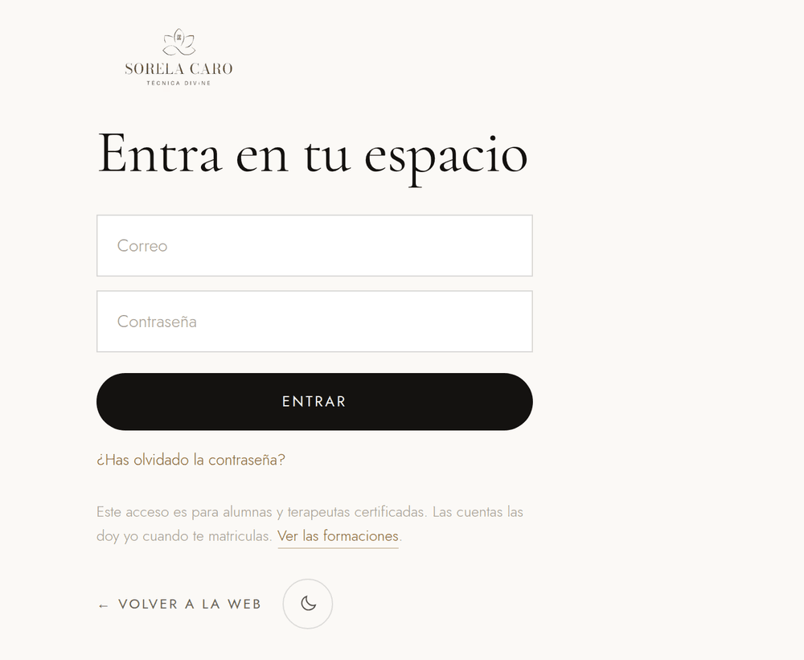
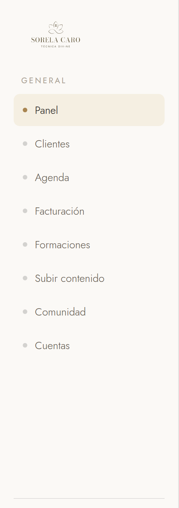
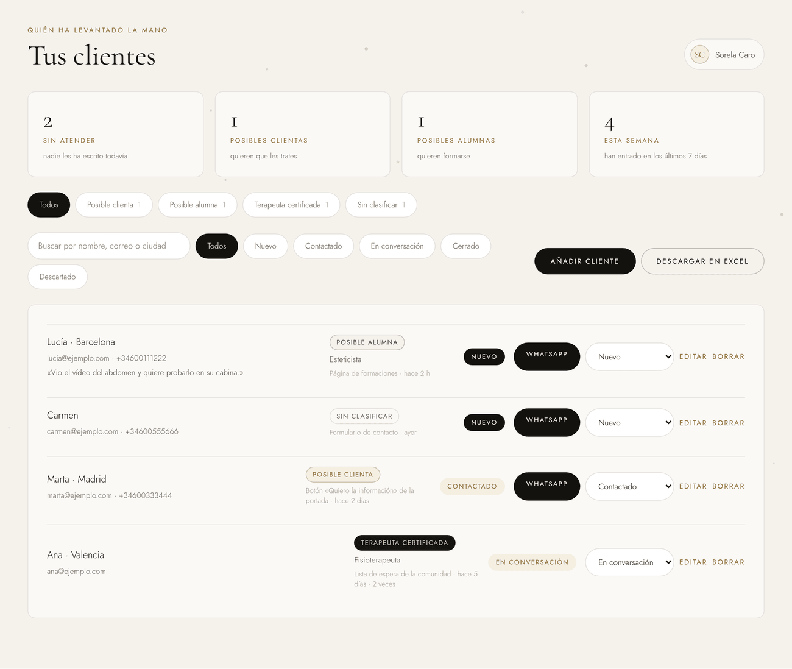
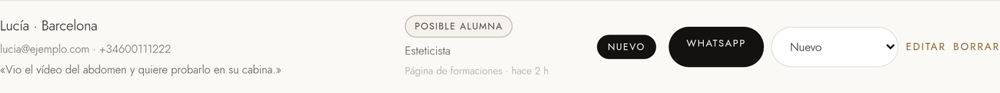
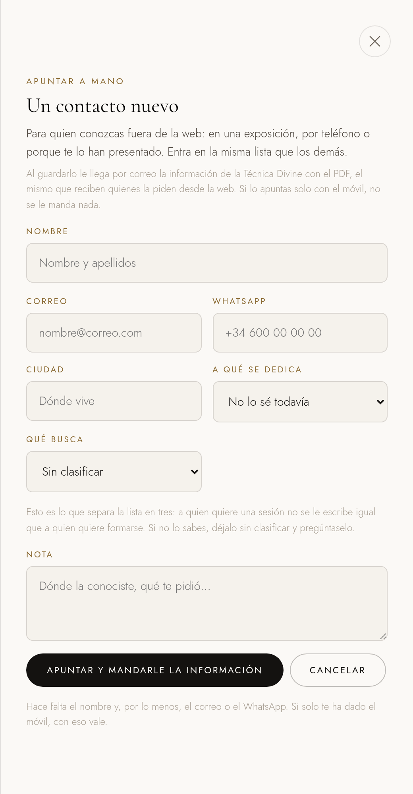
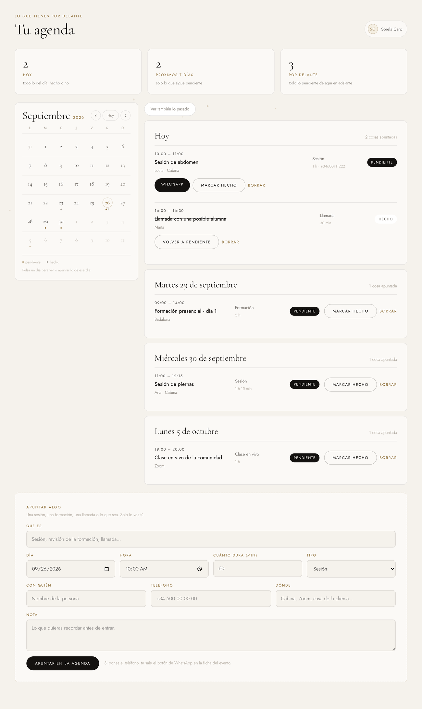

Qué hay en cada apartado, de dónde sale lo que ves, y qué pasa cuando alguien deja su contacto en tu web.
Para empezar
En tu web no hay ningún botón de acceso, y es a propósito. Si lo hubiera, cualquiera que entre a mirar las formaciones vería una puerta. Se entra escribiendo la dirección:
La primera vez, guárdala en favoritos: con la estrella de la barra en el ordenador, o con Añadir a pantalla de inicio en el móvil. Así no tienes que volver a escribirla nunca.

Por qué la contraseña va en blanco
Tu contraseña no la sabe nadie más que tú: no está escrita en ningún sitio del que se pueda sacar, ni siquiera dentro del sistema, que solo guarda una huella de ella. Por eso no se puede imprimir aquí. Escríbela tú a mano en ese hueco si quieres tenerla, y guarda este papel donde guardarías tus llaves.
Si todavía no tienes ninguna, o no la recuerdas, pulsa ¿Has olvidado la contraseña? en esa misma pantalla y escribe tu correo. Te llega un mensaje para ponerte la que quieras.
Este papel abre tu plataforma
Ahí arriba está tu contraseña escrita. Con esas dos líneas, quien tenga este documento entra en tu plataforma y ve los datos de todas tus clientas. Guárdalo donde guardarías tus llaves, y no lo mandes por WhatsApp ni lo dejes en una carpeta compartida.
Puedes cambiarla cuando quieras: pulsa ¿Has olvidado la contraseña? en la pantalla de entrar y escribe tu correo. Te llega un mensaje para ponerte otra, y esta deja de valer.
Una vez dentro, no te la vuelve a pedir en cinco días desde ese mismo ordenador o ese mismo móvil. Y lo que hay dentro no lo ve nadie más: tus clientes, tu agenda y tus facturas solo los ves tú, aunque alguien sepa la dirección.
El menú de la izquierda
Cuatro de ellos guardan de verdad lo que escribes. Los otros están preparados pero todavía no se guarda nada en ellos: están esperando a que haya alumnas y comunidad. Aquí están los ocho, en el orden en que los ves.

| Apartado | Qué es |
|---|---|
| Panel | La primera pantalla al entrar. Un resumen de lo que tienes entre manos. |
| Clientes | La base de todo. Quién ha levantado la mano y qué quiere. Funciona de verdad. |
| Agenda | Tu calendario: sesiones, formaciones, llamadas. Funciona de verdad. |
| Facturación | Tus facturas, con su numeración. Funciona de verdad. |
| Formaciones | Las convocatorias con sus plazas. En preparación: todavía no hay ninguna fecha cerrada, así que aún no guarda nada. |
| Subir contenido | Las clases del aula. En preparación: se abrirá cuando haya alumnas dentro. |
| Comunidad | Lo que pasa entre las terapeutas. En preparación: la comunidad no se ha abierto todavía. |
| Cuentas | Quién puede entrar en la plataforma. Funciona de verdad, y tiene su propio manual. |
Debajo del menú hay un apartado Ver como. Sirve para ver la plataforma con los ojos de una alumna o de una terapeuta, para saber qué ven ellas. No cambia nada: es solo mirar.
El apartado más importante
Aquí cae todo el que deja su contacto en la web, y también quien apuntes tú. No es una lista por orden de llegada: está separada por lo que busca cada persona, porque a quien quiere una sesión no se le escribe igual que a quien quiere formarse.

| Tipo | Qué quiere |
|---|---|
| Posible clienta | Quiere que la trates. Busca una sesión, no aprender la técnica. |
| Posible alumna | Quiere formarse en la Técnica Divine. |
| Terapeuta certificada | Ya es terapeuta y quiere entrar en la comunidad. |
| Sin clasificar | No se sabe qué busca: hay que preguntárselo. Es un hueco a propósito, no un fallo. |
El tipo se calcula solo, según por dónde entró esa persona. Si ves que está mal —pasa: la portada vende la técnica, así que quien entra por ahí se cuenta como posible clienta, y a veces es una esteticista que quiere formarse—, abre su ficha y cámbialo. De dónde llegó se queda como estaba: eso es un hecho que ya pasó.
Aparte del tipo, cada persona tiene un estado que mueves tú según vais hablando: Nuevo (nadie le ha escrito todavía), Contactado, En conversación, Cerrado y Descartado. El contador de arriba, Sin atender, cuenta los que siguen en Nuevo: es tu lista de pendientes del día.

Pulsando en una persona se abre su ficha: todos sus datos, por dónde llegó, y un sitio donde ir apuntando lo que habléis. Esas notas se suman, no se pisan: puedes escribir desde el móvil y desde el ordenador sin perder nada.
Apuntar a alguien tú
Para quien conozcas fuera de la web: en una exposición, por teléfono, porque te la han presentado. Entra en la misma lista que los demás.
Esto es lo importante
Al guardarlo, a esa persona le llega por correo la información de la Técnica Divine con el PDF: exactamente el mismo que reciben quienes la piden desde la web. No se puede deshacer, así que el botón te lo dice antes de pulsarlo.
Si la apuntas solo con el móvil, sin correo, no se le manda nada: no hay a dónde.

Después de guardar, la pantalla te dice si el correo salió o no. Si no salió, tendrás que escribirle tú, o esa persona se queda esperando algo que no llega.
El correo automático
Es el mismo correo en los dos casos: tanto si la persona deja su contacto en la web como si la apuntas tú a mano. Va firmado por ti y las respuestas te llegan a ti.
Hola [su nombre],
Gracias por querer formar parte de esta familia.
Te dejo aquí la información de la Técnica Divine, para que la leas con calma.
Ver la información
Si después de leerla te queda alguna duda, respóndeme a este correo. Lo leo yo.
Sorela Caro
Creadora de la Técnica Divine
Ese botón lleva al PDF de la Técnica Divine. A la vez te llega a ti un aviso con sus datos, para que puedas escribirle el mismo día.
Tu día a día
A la izquierda tienes el calendario del mes; a la derecha, lo que hay ese día. Pulsa cualquier día y abajo verás solo lo de ese día, con la fecha ya puesta en el formulario para apuntar algo nuevo.
En cada día ves unos puntos pequeños: el punto relleno es algo pendiente y el hueco es algo ya hecho. Si hay más de tres cosas, te lo dice con un «+2».

Los tres contadores de arriba son lo que tienes hoy, lo pendiente de los próximos siete días y todo lo pendiente de aquí en adelante. Si pones el teléfono de la persona, te sale su botón de WhatsApp en la cita.
Lo que se cobra
Cada factura lleva su número correlativo, que pone el sistema y no se salta ninguno aunque hagas dos a la vez. Tus datos fiscales se guardan una vez y salen solos en todas.
Las facturas se pueden ver e imprimir, y se marcan como cobradas cuando toca. Lo que aparezca en los totales es lo que hay: si está a cero, es que todavía no has emitido ninguna.
Para que estés tranquila
Todo lo que ves en la plataforma es real. Si una lista está vacía, es que todavía no hay nada, y te lo dice con palabras en vez de enseñarte nombres y cifras de ejemplo. Un número que no sea cierto es peor que un hueco.
Tus datos se guardan en Firebase, de Google, y hay además una copia de cada contacto en tu hoja de cálculo de Drive. El correo automático sale de tu propia cuenta de Gmail: por eso llega firmado por ti y las respuestas te llegan a ti.
Si algo no carga. Casi siempre es la conexión. Vuelve a entrar, y si sigue igual, avisa antes de tocar nada: la plataforma nunca te va a decir que ha guardado algo que no ha guardado.
Si algo no encaja con lo que ves en pantalla, la pantalla manda: este documento describe la plataforma tal y como estaba el día que se escribió.